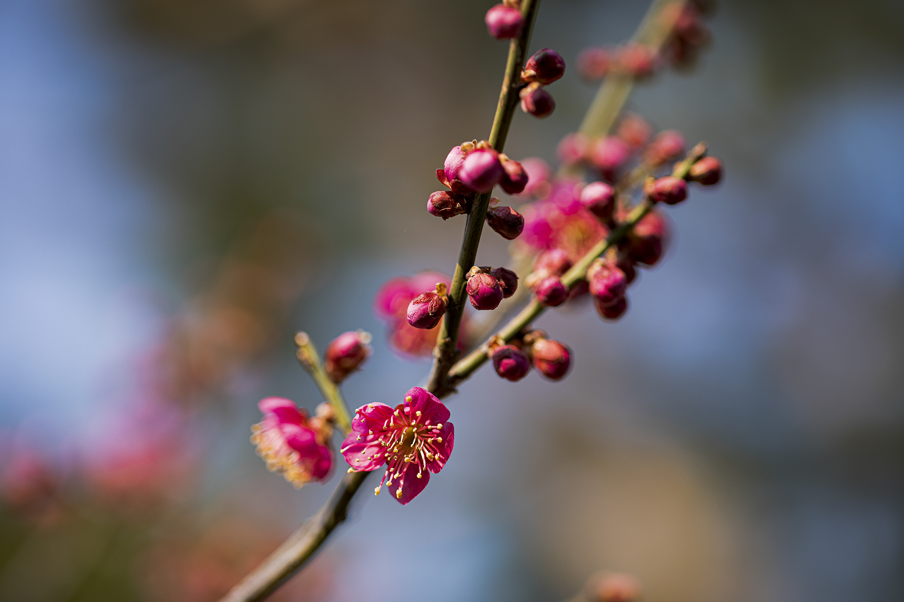
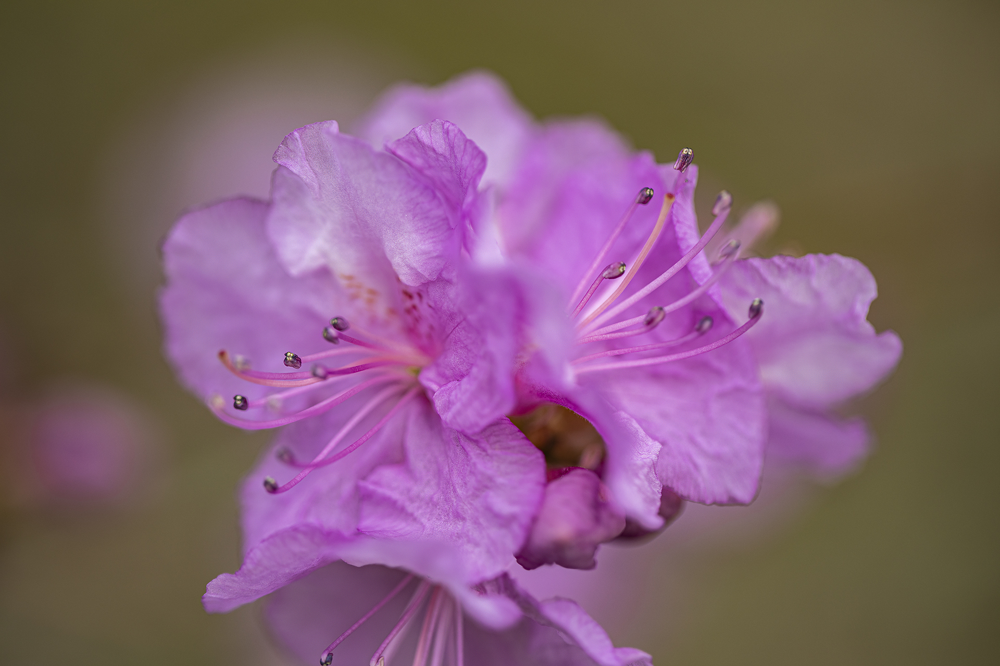
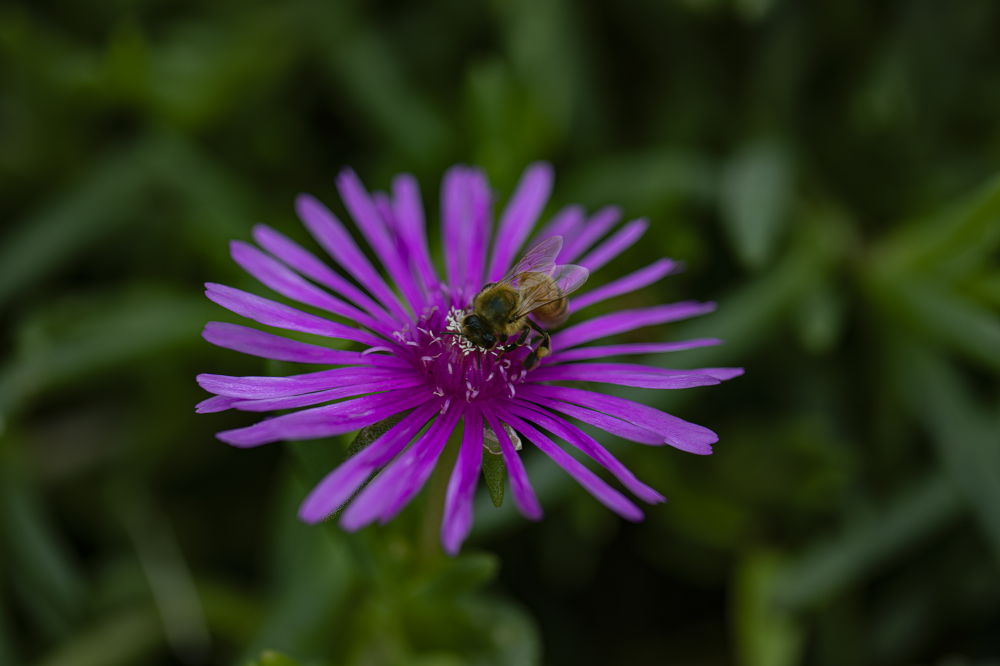
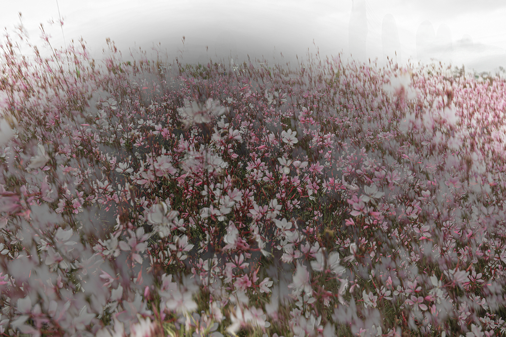
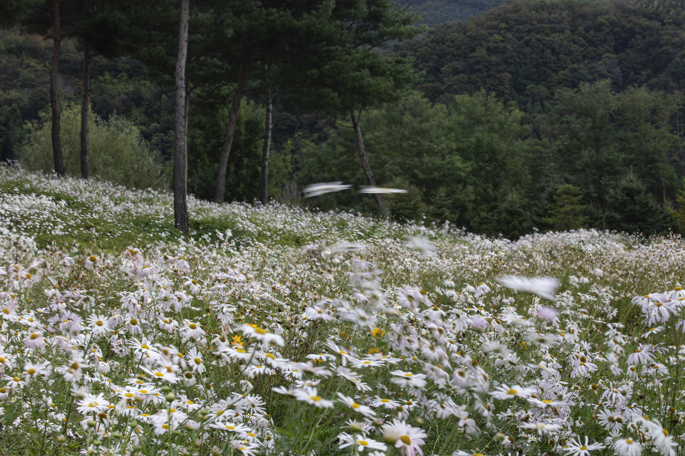

해 질 무렵 물가의 노을과 불 켜진 도시의 야경, 별의 궤적을 새긴 밤하늘까지, 하루의 모든 빛을 좇은
출사 기록이다. 빛 쏟아지는 숲과 안개 속 외딴 나무,
거친 바위의 질감을 거쳐 비 내린 골목과 처마 끝 등불에는 사람과 계절의 온기가 스민다.
도시와 자연, 낮과 밤을 오가며 결국 하나의 시선으로 모인다 — 빛은 지금 어디에 머무는가.





흑백 풍경이 형태와 빛의 본질을 좇는다면, 컬러이미지들은 그 반대편에서
'색이 가진 감정'을 응시한다.
한 송이 꽃의 클로즈업부터 들판을 가득 메운 군락의 풍경까지, 시선의 거리를 자유롭게 오가며 자연이 매 순간 건네는
색의 언어를 담아낸다. 그러나 그 순간의 빛은 이미 지나간 과거의 빛이며 영원히 존재 하지 않는 빛이다.